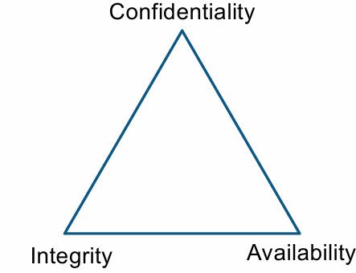
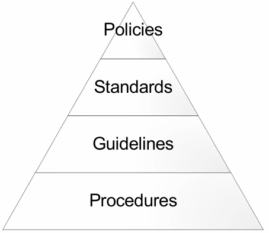
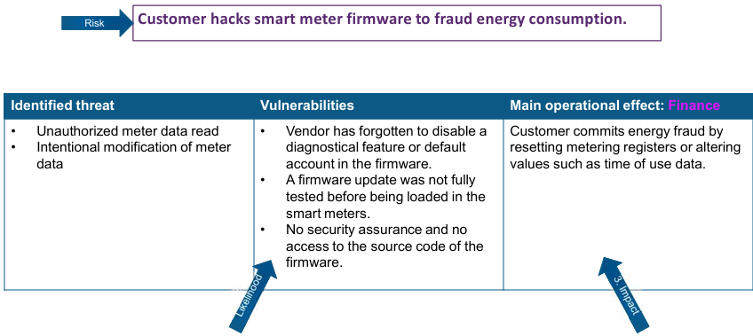
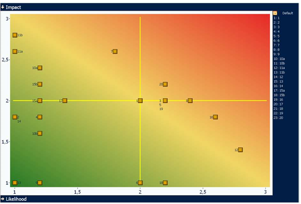

Principes de base de sécurité des systèmes d'information :
Pour atteindre le seuil de réussite, l'étudiant sera capable :
d'expliquer différents concepts liés à la sécurisation des systèmes d'information et de communication.
d'identifier des outils et des technologies de sécurisation des systèmes d'information et de communication appropriés dans un scénario ou un contexte.
Pour la détermination du degré de maîtrise, il sera tenu compte du degré de clarté, de cohérence, de pertinence et de précision des propositions formulées.
Introduction :
Pourquoi faut-il sécuriser les systèmes d'information ?
Parce que c'est la loi : Si dans nos habitudes, individuellement nous ne faisons pas très attention à respecter les lois, il n'en va pas de même pour les entreprises !
Parce que nos clients l'exigent : Nos clients nous transmettent de nombreuses informations et données, ces données peuvent dire beaucoup sur leurs activités, et ils ne veulent pas que leurs concurrents les connaissent.
Parce que nos fournisseurs l'exigent : Comme les clients, les fournisseurs nous donnent des informations et des données qu'ils ne veulent pas voir divulguées.
Parce que nos concurrents nous observent : Nos concurrents sont prêts à nous attaquer si nous ne respectons pas les règles.
Parce que nous devons préserver nos données et nos capacités de traitement pour garantir notre business.
De quoi faut-il nous protéger ?
Plusieurs dangers menacent les systèmes d'information de nos entreprises :
Les malveillances en provenance de l'interne de l'entreprise. Par exemple des personnes mécontentes, des personnes incompétentes...
Les malveillances en provenance de l'extérieur.
Les attaques menées par nos concurrents afin de nous déstabiliser.
Les attaques menées par des entités ennemies (cyber terrorisme, terrorisme d'état...).
L'espionnage industriel ou commercial.
L'utilisation de nos systèmes d'information pour attaquer un de nos partenaires.
Porter atteinte à notre réputation, à notre image de marque.
Structure de la norme ISO27002:2013 :
Politiques de sécurité
Organisation et gestion
Gestion des ressources humaines
Gestion des accès
Cryptographie
Sécurité physique et environnementale
Sécurité opérationnelle
Communications et réseaux
Développement des systèmes d'information et maintenance
Gestion de la relation avec les partenaires
Gestion des incidents de sécurité
Continuité et disponibilité des activités de l'entreprise
Conformité
Les clauses 1 à 5 définissent le cadre normatif.
Les clauses 6 à 19 définissent les contrôles de sécurité.
Sécurité des systèmes d'information :
Objectifs de la sécurité des systèmes d'information :
Les objectifs de l'informatique doivent être alignés sur les objectifs stratégiques de l'entreprise.
Assurer la sécurité des ressources informationnelles.
Assurer des capacités de traitement, de stockage et de communication nécessaire aux objectifs business.
CIA Triad :

Confidentiality - Confidentialité : Assure que l'information n'est pas divulguée, volontairement ou involontairement, à une personne qui n'a pas le niveau de confiance requis.
Integrity - Intégrité : Assure que l'information n'est pas modifiée, volontairement ou involontairement, par une personne qui n'a pas le niveau de confiance requis.
Availability - Disponibilité : Assure que l'information est disponible et accessible quand le business en a besoin.
Concepts dérivés :
Non-répudiation : La non-répudiation garantit que le sujet d'une activité ou d'un événement ne peut nier que l'événement s'est produit. La non-répudiation empêche un sujet de prétendre ne pas avoir envoyé un message, ne pas avoir effectué une action ou ne pas avoir été la cause d'un événement.
Imputabilité : L'imputabilité certifie que l'auteur d'un message, d'un document ou d'une transaction ne peut nier en être l'auteur.
Identification : L'identification est la déclaration d'une identité lors d'une tentative d'accès à une zone sécurisée du système d'information.
Authentification : L'authentification consiste à prouver qu'une identité est bien celle qu'elle prétend être.
Autorisation : Définition des autorisations et des refus d'accès aux ressources et aux objets pour une identité spécifique.
Auditing : Enregistrement dans un fichier journal d'événements les activités des utilisateurs et des programmes dans le système d'information.
Accounting/accountability : Examen du fichier journal d'événements pour vérifier la conformité et les violations des activités dans le système d'information.
Approches scientifiques de la sécurité :
Comment approcher de manière scientifique le concept de sécurité ?
L'enjeu n'est pas de proposer une définition unique qui convient à tous, mais de proposer un cadre de réflexion qui tient compte des différentes sensibilités scientifiques.
Trois dimensions sont présentées dans cette approche :
Dimension sémantique :
Quels sont les sens donnés au mot "sécurité" ?
Le terme "sécurité" est polysémique. Par exemple : sécurité publique, sécurité alimentaire, etc.
La sécurité comme un sentiment (état d'âme, disposition subjective caractérisée par la confiance).
La sécurité comme un état (état de tranquillité, de quiétude).
La sécurité comme une politique (ensemble de décisions de gouvernance de la société).
Dimension épistémologique :
Comment connaître l'objet de réflexion qu'est la sécurité et plus particulièrement la sécurité des systèmes d'information ?
Ontologie : Quelle est la nature de l'objet de réflexion ? Objectif ? Subjectif ?
Épistémologie : Quelle est la nature de la connaissance que nous avons de l'objet de réflexion ? Positiviste ? Interprétativiste ? Constructiviste ?
Méthodologie : Comment acquérons-nous ces connaissances ? Selon des méthodes quantitatives ? Selon des méthodes qualitatives ?
Dimension éthique :
Éthique : Concept philosophique lié à la morale qui vise à mettre en évidence le fait que le respect des valeurs appliquées personnellement ou professionnellement doit avoir une préséance dans toutes les activités humaines.
Quelles sont les valeurs partagées par les membres de cette entreprise ?
Quelles sont mes propres valeurs ?
Une approche scientifique est indispensable pour clarifier le statut des connaissances produites par la recherche.
On considère ici que la sécurité est aussi un sujet des sciences de gestion (économie, organisation, management, etc.).
Organisation de la sécurité :
Objectif : Établir un cadre de gestion pour initier et contrôler la mise en oeuvre et le fonctionnement de la sécurité de l'information au sein de l'organisation.
L'entreprise ou l'organisation n'est pas insolée du monde ! Elle a des contatcs avec les autoritéspolitiques et sectorielles. Elle fait partie de chaînes de production de valeurs :
Elle reconnaît la dépendance des activités de l'entreprise aux technologies de l'information.
On aligne la sécurité avec les fonctions internes de l'entreprise (la direction, les Business Units, les fonctions de support (par exemple : GRH)).
On aligne la sécurité avec la mission de l'entreprise, les buts, les stratégies, les objectifs opérationnels, financiers, etc.
La Direction rédige une déclaration de sécurité des systèmes d'information dans laquelle elle marque son intérêt et son engagement dans la protection du capital informationnel de l'entreprise.
La gouvernance de sécurité est un document de la Direction qui contient les sections suivantes :
Les principes de sécurité :
Ce sont les grandes orientations pour protéger les systèmes d'infoamtion.
Il s'agit des grands principes adoptées par la Direction pour assurer la sécurité des données de l'entreprise.
Par exemple : tous les PC, portables, mobiles doivent avoir un antivirus.
Les rôles et les responsabilités :
On définit qui est responsable de quoi pour la protection des systèmes d'information.
Le CEO (Chief Executive Officer) porte la responsabilité ultime de la sécurité de l'entreprise, et donc aussi des données et des informations qui sont traités, stockées ou transférées.
Le CISO (Chief Information Security Officer) est le responsable de la stratégie de sécurité et des protections opérationnelles des systèmes d'information.
Le CIO (Chief Information Officer) est le responsable des équipes IT
Le DPO (Data Privacy Officer) est le responsable de la conformité des données à caractère personnel.
Le Data Owner est le responsable de la classification des données et de leurs utilisations.
Le Data Custodian est le responsable de l'implémentation des protections définies dans les politiques de sécurité.
Le User est un rôle assigné à toute personne qui a accès aux systèmes d'information.
L'Auditor est le responsable qui reçoit et vérifie que les politiques de sécurité sont proprementet effictiveent implémentées de manière adéquate.
Accountable - Approuve : C'est la personne qui est comptable, redevable sur l'avancement de l'action. Il n'y a qu'un et un seul Accountable par action.
Responsible - Réalise : C'est la ou les persones qui réalisent l'action. Il y a au moins un Responsible par action.
Consulted : La ou les personnes que l'on consulte pour obtenir un avis. La personne qui a demandé un avis doit en tenir compte au mieux.
Informed : La ou les personnes doivent être tenues informées, elles doivent recevoir l'information sur la réalisation de l'action.
Activités
Direction
CISO
Security Analyst
Technical Architect
Developpeur
Testeur
Rédiger et maintenir les politiques de sécurité
A
R
C
C
I
I
Gérer les règles de filtrage du Firewall
A
R
C
I
I
Faire les spécifications
A
C
R
R
I
...
Les audits de sécurité :
La responsabilité de l'auditeur interne.
Les politiques de sécurité :
Structure des politiques de sécurité
Politiques de sécurité - Security Policies : Une politique de sécurité est un document qui formalise les règles de sécurité à suivre, les éventuelles dérogations et les actions en cas de non-respect des règles.
Standards de sécurité : Un standard de sécurité est un ensemble de mesures à prendre, d'actions, de points de vérification recommandés pour mettre en place un niveau standard de sécurité. Les standards sont regroupés par th§mes, par exemple le standard de configuration pour les serveurs Microsoft.
Guidelines de sécurité : Les Guidelines sont des lignes directrices qui expliquent de manière générique comment mettre en oeuvre les sstandards de sécurité. C'est un ensemble de recommandations.
Procédures de sécurité : Une procédure de sécurité décrit pas à pas les instructions pour sécuriser un serveur ou une application. Il est important de suivre exactement ces instructions et de les corriger s'il y a des erreurs.

Les politiques de sécurité est un ensemble de règles obligatoires à suivre dans toute l'entreprise.
On peut avoir des dérogations à une ou plusieurs règles d'une politique de sécurité uniquement sur approbation d'un Comité de sécurité ou du Comité de directeurs pour une période déterminée sans jamais de date de fin. La demande de dérogation doit être argumentée. Une dérogation peut/doit être accompagnée de compensatoires. Il peut y avoir un prolongement.
Exemples : politique de sécurité des passwords (mots de passe), politique de classification des documents, postion de gestion des incidents de sécurité, ...
Les mesures compensatoires :
Les mesures compensatoires doivent toujours être en supplément des mesures de sécurité déjà en place.
Les mesures compensatoires peuvent être techniques ou organisationnelles.
Exemple : La politique de mots de passe une longueur d'au moins 10 caractères pour tout mot de passe. Or un programme un peu ancien n'accepte que des mots de passe d'une longueur de 8 caractères. Une dérogation a été acceptée si la mesure compensatoire suivante est mise en place : audit quotidien des login/logout de tous les accès à cette application et informer le CISO des résultats de cette analyse.
Les standards de sécurité :
Les standards de sécurité sont des recommandations de sécurité rédigées par des experts du produit ou du programme.
Les recommandations sont de nature technique (mettre en place un moyen technique pour sécuriser) et/ou organisationnelle (mettre en place une procédure, une responsabilité pour surveiller la sécurité).
Les standards de sécurité ne sont pas obligatoires mail il faut être en mesure d'expliquer pourquoi les recommandations des experts ne sont pas suivies !
Il peut y avoir plusieurs standards de sécurité pour un même produit afin de tenir compte du contexte dans lequel le produit est utilisé ou de son exposition aux risques.
Les guidelines sont des indications supplémentaires pour améliorer la sécurité ou en faciliter l'implémentation.
Il s'agit souvent de Best Practices, c'est-à-dire d'un guide pratique et opérationnel destiné aux spécialistes et aux utilisateurs.
Les guidelines ne sont pas obligatoires.
>Exemple : Guidelines pour mettre en place une gestion des incidents de sécurité d'un nouveau serveur.
Les procédures de sécurité :
Les procédures sont des marches à suivre opérationnelles pour sécuriser un produit ou un programme.
Il s'agit d'actions à réaliser pas-à-pas.
Les procédures sont rédigées par les experts, les ingénieurs système ou les analystes qui connaissent bien le contexte de l'entreprise et les produits.
Les procédures doivent être testées et vérifiées dans des environnements de tests afin de s'assurer de leur fiabilité et de leur efficacité.
Il est obligatoire de suivre les procédures telles qu'elles sont rédigées afin de ne pas introduire de nouvelles erreurs. Si une erreur est détectée dans une procédure, il faut en informer le responsable (celui qui a écrit cette procédure) afin qu'une correction soit apportée.
Structure type d'une politique de sécurité :
Introduction : Pourquoi cette security policy ? Que couvre-t-elle et que ne couvre-t-elle pas ?
Scope : À quels thèmes ou services s'applique-t-elle ? À qui s'applique-t-elle ? Qui sont les utilisateurs cibles ?
Security Rules : Quelles sont les règles à suivre dans les différents cas ? 1 règle = 1 instruction, ligne ou paragraphe.
Conséquences si les règles sont suivies : Comment vérifier que les règles sont suivies ? Quelles sont les actions quand les règles ne sont pas suivies ?
Question - Politique de sécurité :
Qu'est-ce qu'une politique de sécurité des passwords pour une entreprise qui traite de nombreuses données dans ses systèmes informatiques ?
À quoi faut-il penser ?
Les règles générales, applicables dans les cas les plus courants.
Les règles particulières.
Les différents types d'utilisateurs et leurs mots de passe :
Les comptes d'utilisateur.
Les comptes génériques → comptes qui sont utilisés par un groupe de personnes dans l'entreprise (par exemple la réception).
Les comptes applicatifs ; comptes qui ne sont utilisés que pour des applications et qui n'ont généralement pas d'accès interactifs (par exemple : ssh).
Les comptes administratifs → comptes des administrateurs système qui ont des droits généralement très puissants dans le système d'information.
Scope : Cette politique de sécurité concerne les comptes et mots de passe de la bureaucratique.
Un petit bug logiciel ou une simple erreur humaine peut servir de point d'entrée pour les attaquants.
Même si l'incertitude importante, on doit se préparer aux conséquences.
Exemple : L'attaque contre l'hôpital Saint-Pierre à Bruxelles (2023).
Les faits : L'hôpital Saint-Pierre dans le centre de Bruxelles a dû provisoirement fermer ses urgences samedi et dévié la ligne du 112 vers d'autres institutions en raison d'une cyberattaque, a indiqué l'établissement de soins dans un communiqué (Le Soir).
Analyse :
Point d'entrée mineur : Les pirates ont utilisé le compte VPN d'un consultant resté actif alors qu'il ne travaillait plus pour l'hôpital.
Propagation massive : Une fois le compte piraté, les attaquants ont propagé un ransomware et pris le contrôle de certains serveurs.
Impacts inattendus : Arrêt des services d'urgence et 112, arrêt de la téléphonie, impossible de prendre des rendez-vous médicaux, tous les hôpitaux publics bruxellois ont été temporairement déconnectés.
Black Swans Events :
En analyse des risques, les Black Swans Events sont des événements qui sont imprévisibles tellement ils sont improbables... mais ils ne sont pas impossibles.
Les risques sont des menaces sur les objectifs de l'entreprise.
Les risques sont dans un contexte donné, propre à l'entreprise. Tous les risques n'ont pas la même importance pour toutes les entreprises.
Les activités de l'enterprise sont dépendantes des systèmes d'information (SI). Les chaînes de dépendances peuvent se casser, ce qui peut entraîner des ruptures dans les activités de l'entreprise. Comment gérer cette dépendance et les risques de défaillance du SI ?
NIS Directive : Cybersécurité des opérateurs de services essentiels (OSE).
Certaines entreprises fournissent des services très importants pour la vie citoyens et des entreprises de l'UE. Voir l'annexe 2 de la Directive pour les critères des secteurs d'activité concernés.
L'entreprise doit mettre en place un dispositif qui permet de gérer les risques auxquels elle fait face.
Responsabilité : Qui porte la responsabilité des risques ? Qui décide des plans d'action, de la stratégie ?
Organisation : Qui est responsable de réaliser les analyses de risques ? Qui est responsable des conséquences des risques ? Qui prend les décisions ?
Méthodologie : Comment identifier les risques ? Comment évaluer les risques ? Quelle méthodologie utiliser ?
Analyse qualitative : Impacts sur les qualités de l'entreprise, réputation, confiance, image
Analyse Quantitative des Risques :
Les résultats d'une analyse quantitative des risques sont une valeur concrète exprimée en argent (€).
Elle utilise la valeur réelle pour évaluer le risque global.
Exemple : probabilités et statistiques, mesures, collecte de données, etc.
Éléments de l'analyse quantitative des risques :
Valeur de l'actif (AV - Asset Value) : L'AV est le coût ou la valeur d'un actif unique.
Facteur d'exposition (EF - Exposure Factor) : L'EF représente le pourcentage de perte subi si un actif spécifique est compromis à cause d'un risque réalisé.
Perte unique attendue (SLE - Single Loss Expectancy) : Le SLE correspond au coût d'un risque réalisé sur un actif spécifique.
Taux annuel d'occurrence (ARO - Annualised Rate of Occurrence) : L'ARO est la fréquence à laquelle un risque spécifique devrait se produire en une année.
Perte annuelle attendue (ALE - Annualised Loss Expectancy) : L'ALE correspond au coût annuel total engendré par toutes les occurrences d'un risque donné sur un actif.
Étapes pour effectivement une analyse quantitative des risques :
Inventorier les actifs et déterminer la valeur de l'actif (AV).
Déterminer le facteur d'exposition (FE).
Calculer la perte unique attendue (SLE). Formule : SLE = AV x EF.
Déterminer le taux annuel d'occurrence (ARO).
Calculer la perte annuelle attendue (ALE). Formule : ALE = SLE x ARO.
Exemple :
Calculer le ALE d'une attaque parun malware de type CryptoLocker.
La valeur d'un poste de travail est estimée à 1000€.
L'entreprise dispose de 500 postes de travail.
Faites des hypothèses sur la fréquence annuelle d'occurrence d'une telle attaque.
Faites des hypothèses sur l'impact d'une telle attaque sur le poste de travail.
AV = 1000€
EF = 100%
SLE = 1000€ x 100% x 500 PC = 500000€
ARO = une fois tous les 2 ans = 0,5
ALE = SLE x ARO = 500000€ x 0,5 = 250000€
Coût annualisé de la sauvegarde (ACS - Annualized Cost of Safeguard)
Analyse qualitative des risques :
L'analyse qualitative est basée sur l'évaluation de scénarios et l'identification d'événements redoutés.
Le niveau de risque est évalué sur base d'une échelle d'évaluation.
Ce processus d'évaluation implique un jugement, une intuition ou une expérience de la part des personnes impliquées.
Il faut toujours adapter la matrice de risques à l'entreprise dans laquelle elle est utilisée. C'est le calibrage de la matrice de risques.
Adaptation de l'échelle des probabilités de survenance. Que signifie pour l'entreprise un risque fréquent ?
Adaptation des échelles des niveaux d'impact. Quels sont les impacts à considérer ? Quels sont les niveaux d'impacts ?
Management des risques :
On réalise la cartographie des risques car tous les risques sont reportés sur un même graphique.
Ça donne une vue globale des risques de l'entreprise. Ça permet la comparaison. Les positions sont relatives.
Tous les risques sont documentés : Quelle est la vulnérabilité qui permet la réalisation du risque ? Quelle est la menace qui permet l'utilisation de la vulnérabilité ? Quelle est la probabilité, l'éventualité que le risque se réalise ?
Le plan d'action : Comment contrôler les risques ? Quelles sont les actions et comment sont-elles planifiées ?
Example of Risk :

Le niveau de risque et la priorité des actions de remédiation.
Toutes les actions ne peuvent pas être réalisées tout de suite ! Comment gérer les priorités ?
Faut-il mettre la priorité la plus élevée sur les risques les plus importants ?
Faut-il mettre la priorité sur les actions les plus "efficaces" de réduction de niveau de risques ?
Exemple de cartographie des risques :

Identification des risques pour l'entreprise.
Méthode des scénarios et événements redoutés.
Tests de sécurité, audit.
Évaluer les risques : matrice de risques (impacts*survenance).
Recommandations et contremesures : Éviter, mitiger, transférer, accepter.
Plan d'action et suivi : Projets, budgets, priorités.
Revoir les risques régulièrement.
Mitigation des risques : Réduire les risques avec des mesures de protection, des Security Controls, ...
Transférer les risques :
Réduire les risques en les faisant porter par quelqu'un d'autre.
Prendre une assurance, cyberassurance, mettre son informatique dans le cloud (vérifiez les contrats !).
Accepter les risques résiduels :
Malgré les mesures de réduction et de transfert, il reste encore un certain niveau de risques qu'il faut accepter.
Refuser un risque :
Si le risque résiduel est encore trop important et qu'il n'est pas supportable par l'entreprise. Arrêter les activités liées à ces risques, faire autrement.
Nier l'existence d'un risque et espérer qu'il ne se produise jamais n'est pas une attitude responsable.
Mesures de protection :
Établir une baseline, c'est-à-dire des mesures de base qui servent de référence pour le suivi.
Décider d'une approche tactique de réponse aux risques (voir ci-dessous).
Détecter, évaluer et gérer les situations quand les risques se réalisent.
Se préparer au pire.
Sensibiliser les utilisateurs (tous) : information, exercices, ...
Décider des contremesures adéquates pour gérer les risques.
Faire un plan d'action pour suivre le déploiement des contremesures et leur efficacité.
Les approches tactiques de gestions de menaces et des risques :
Réactive : Agir après que le risque soit matérialisé.
Proactive : Agir en prévision d'un risque possible.
Préventive : Agir en prévision d'un risque certain.
Dissuasive : Agir pour éviter que les conditions de matérialisation du risque ne se produisent.
Comment déterminer la tactique la plus appropriée ?
Méthodologie de gestion des risques :
EBIOS (Expression des Besoins et Identification des Objectifs de Sécurité) basée sur des questionnaires. Ça fait référence à ISO27001/2.
Techniques :
Arbre des causes et des défaillances.
Arbre des événements et des conséquences.
Autres méthodes :
OCTAVE (Operationally Critical Threat, Asset, and Vulnerability Evaluation)
NIST SP800-30
FAIR (Factor Analysis of Information Risk)
...
ISO27005 - Gestion des risques - Systèmes d'information :
Processus de gestion des risques :
Collecter de gestion des risques
Évaluer les niveaux de risque à l'aide d'une matrice de risque impact-probabilité
Prioritiser les risques et les actions de protection
Implémenter les remédiations ou contremesures
La matrice de risques à deux dimensions :
Impact
Survenance, ou probabilité d'occurrence
Les types d'impact :
Financier
Disponibilité
Confidentialité et intégrité des données
Légal - obligation de respecter des lois ou des réglementations
Réputation et image de la société
...
Gestion des crises :
Quand un risque se réalise, la situation peut nécessiter la mise en place d'une organisation adaptée à la prise d'actions "exceptionnelles".
Une crise a toujours un début et une fin.
Qui décide du début de la situation de crise ?
Comité de directeurs...
Qui décide de la fin de la situation de crise ?
Les mêmes qui ont décidé du début.
Le pilotage de la crise doit être confié à un "Crisis Manager".
Après la crise, il faut toujours :
Faire un rapport qui décrit précisément ce qu'il s'est passé et décider d'actions pour mieux agir si la situation se représente.
Faire un retour d'expérience → développer une connaissance collective et individuelle.
Gestion des incidents et des problèmes :
Faire la différence entre incident et problème :
Un incident a toujours un impact pour l'utilisateur, le client.
Un problème est un dysfonctionnement qui peut occasionner un incident.
Les incidents peuvent engendrer une situation de crise s'ils ne sont pas maîtrisables.
La gestion des incidents est un processus qui doit être mis en place avant que les incidents ne se produisent → anticipation.
Il faut toujours faire des "entraînements" aux réponses d'incidents.
La gestion des problèmes est aussi un processus qui doit être mis en place dans l'entreprise.